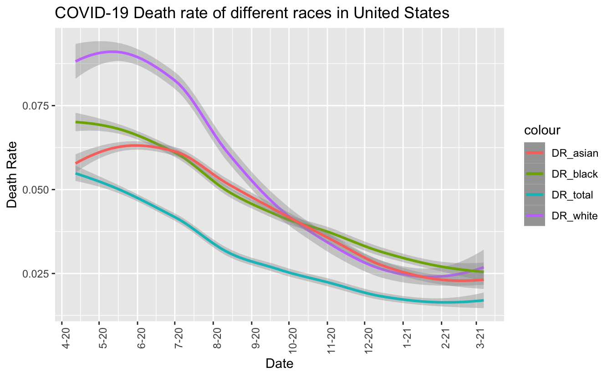

This is my PM566 Final Project website. I will showcase major finding in report here. Full report can be downloaded from the website.
This dataset is a collaboration between the COVID Tracking Project and the Boston University Center for Antiracist Research, which shows the counts of cases/deaths of COVID-19 categorized by races for each state in United States. The data was collected from April 12, 2020 to March 07, 2021.
I download data in csv form from The COVID Tracking Project https://covidtracking.com/race
| Total_objects | NA_total | NA_white | NA_black | NA_latinx | NA_asian | NA_AIAN | NA_NHPI | NA_multi |
|---|---|---|---|---|---|---|---|---|
| 5320 | 232 | 652 | 733 | 3248 | 950 | 2057 | 3139 | 3795 |
Based on this table, I decided to take a close look at data of Total, White, Black and Asian since races like Latinx, AIAN, NHPI and multiracial have almost half of missing data, which is not suitable for further analysis. And for the three races categories left, I dropped all the NAs for further analysis.
I think racial inequality may contribute to the huge number of missing data in minority groups. Some states may think that few people care about data from minority groups and are not willing to devote much attention and labor force to collect data from them. Or the population of those minority groups in those states are too small, hence they ignored it.
Because of different population base in each state, the original counts of deaths and cases may be not very meaningful to analyze, so I choose to calculate death rate instead.

From this graph, we can see that the trend of all DR is gradually decreasing, the total death rate is always the lowest one since there are a lot of cases of other or unknown races which largely increase the denominator. And although death rate of white is higher than the other two races initially, they approach to the same level finally with a little bit of difference.
| State | DR_total | DR_white | DR_black | DR_asian |
|---|---|---|---|---|
| AK | 0.0051406 | 0.0069399 | 0.0060040 | 0.0118512 |
| AL | 0.0203033 | 0.0294985 | 0.0268511 | 0.0105587 |
| AR | 0.0163753 | 0.0200919 | 0.0154203 | 0.0123584 |
| AZ | 0.0197567 | 0.0261499 | 0.0167992 | 0.0184548 |
| CA | 0.0154578 | 0.0303423 | 0.0294305 | 0.0327237 |
| CO | 0.0137369 | 0.0212970 | 0.0151143 | 0.0179519 |
| CT | 0.0270003 | 0.0633329 | 0.0461045 | 0.0274925 |
| DC | 0.0248678 | 0.0098058 | 0.0383356 | 0.0153173 |
| DE | 0.0166716 | 0.0242453 | 0.0166431 | 0.0059718 |
| GA | 0.0174951 | 0.0280037 | 0.0244460 | 0.0166592 |
| HI | 0.0159550 | 0.0109709 | 0.0068966 | 0.0402109 |
| IA | 0.0163629 | 0.0257178 | 0.0131501 | 0.0179570 |
| ID | 0.0108656 | 0.0176252 | 0.0089286 | 0.0139459 |
| IL | 0.0192050 | 0.0259433 | 0.0331343 | 0.0272217 |
| IN | 0.0190885 | 0.0201121 | 0.0211149 | 0.0077890 |
| KS | 0.0162644 | 0.0177400 | 0.0163992 | 0.0115837 |
| KY | 0.0117334 | 0.0138986 | 0.0138005 | 0.0062500 |
| LA | 0.0224720 | 0.0265559 | 0.0272827 | 0.0044953 |
| MA | 0.0277616 | 0.0547782 | 0.0302473 | 0.0258121 |
| MD | 0.0205386 | 0.0302754 | 0.0244214 | 0.0312394 |
| ME | 0.0154169 | 0.0165973 | 0.0044405 | 0.0059761 |
| MI | 0.0253905 | 0.0296323 | 0.0488960 | 0.0172747 |
| MN | 0.0133670 | 0.0165998 | 0.0081703 | 0.0120633 |
| MO | 0.0169793 | 0.0204635 | 0.0252862 | 0.0155200 |
| MS | 0.0228778 | 0.0260481 | 0.0272974 | 0.0127208 |
| MT | 0.0136849 | 0.0134534 | 0.0021739 | 0.0029240 |
| NC | 0.0131877 | 0.0161873 | 0.0181097 | 0.0088106 |
| NE | 0.0103716 | 0.0130129 | 0.0113348 | 0.0106800 |
| NH | 0.0154044 | 0.0281319 | 0.0126829 | 0.0115830 |
| NJ | 0.0290103 | 0.0481572 | 0.0535786 | 0.0387883 |
| NM | 0.0203721 | 0.0339408 | 0.0207627 | 0.0159953 |
| NV | 0.0170060 | 0.0251505 | 0.0207908 | 0.0244575 |
| OH | 0.0180445 | 0.0259273 | 0.0211917 | 0.0102879 |
| OK | 0.0105688 | 0.0133303 | 0.0117220 | 0.0072593 |
| OR | 0.0145977 | 0.0200269 | 0.0121340 | 0.0119588 |
| PA | 0.0256672 | 0.0400241 | 0.0348485 | 0.0234298 |
| RI | 0.0198328 | 0.0305781 | 0.0133676 | 0.0157985 |
| SC | 0.0166469 | 0.0198065 | 0.0224426 | 0.0104287 |
| SD | 0.0167270 | 0.0176819 | 0.0027789 | 0.0108992 |
| TN | 0.0147380 | 0.0178243 | 0.0195069 | 0.0096584 |
| TX | 0.0165441 | 0.7144365 | 0.3355429 | 0.9624866 |
| UT | 0.0052714 | 0.0055744 | 0.0035993 | 0.0083017 |
| VA | 0.0163838 | 0.0255112 | 0.0228102 | 0.0168635 |
| VT | 0.0129329 | 0.0145269 | 0.0032626 | 0.0067024 |
| WA | 0.0146314 | 0.0369776 | 0.0147274 | 0.0305788 |
| WI | 0.0114308 | 0.0127723 | 0.0117882 | 0.0081656 |
| WY | 0.0124534 | 0.0215528 | 0.0047059 | 0.0213523 |
Looking back to the table of death rate in each state, I find that Texas has a ridiculous result in death rate of white(0.7144365) death rate of black(0.3355429) and death rate of asian (0.9624866), which is abnormally high. So I think that there must be some problems in this data and hence I delete the data of Texas when I draw the map.
Generally it shows a radial pattern: the middle part has a lowest death rate and gradually become higher while approching to the coastline. And total death rate of the eastern and north-eastern area is highest. Relatively higher population and more samples of those states along the coastline may lead to greater burden of medical system, and finally lead to a higher death rate. Also, there are more international transportation for those states along the coastline, which may bring in more cases and deaths of COVID-19.
The patterns of death rate in those three maps with different races are similar to the pattern of total death rate. The difference such as high death rate of black in Michigan, high death rate of asian in California and Hawaii is caused by relatively higher population of such races in those states, which provides more data.
Just from these data, I think there is no clear association between races and death rate of COVID-19. The death rate of all three races approach to the same level finally. In my opinion, the death rate is highly depend on the action of the State rather than races, for example, the burden of medical system, the policy to restrict COVID-19 etc. I saw a lot of data showed a different result from these data, which indicated that death rate of black is highest among all races. That might be caused by inequality of medical distribution at the stage of onset of COVID-19. As the burden of medical resource relieved and government took action to restrict COVID-19 and gave supports to citizens, I believe that death rate that approaches to the same level is a right trend.
Copyright © 2021, Nicky Nie.